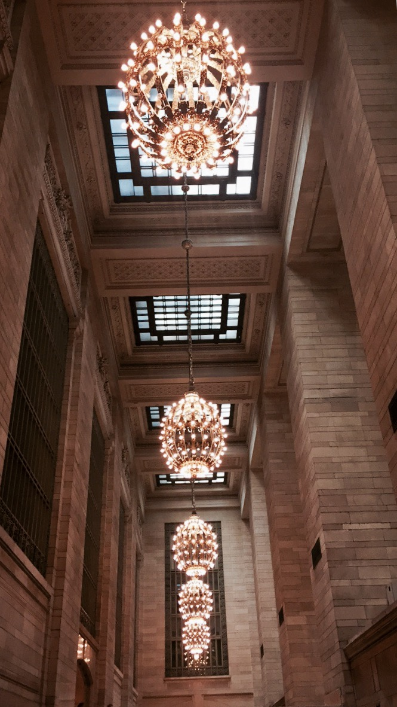
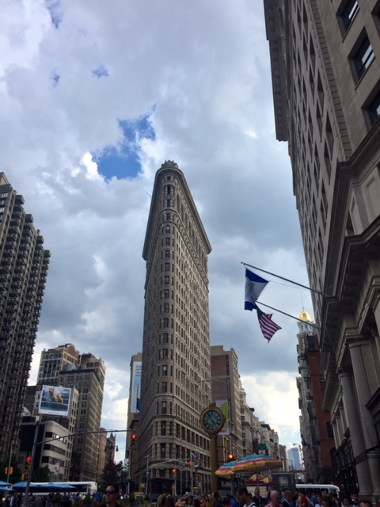

New-York City
The city that never sleeps
When I first arrived to grand central station I was mesmerised, the building is so nicely put together, I’ve always been an architecture fan, this was very interesting to me. The place was amazing, everything was going so fast, everyone was in a rush, every store was filed with people and the tourists were lost in this mayhem…

As soon as you get out you feel crushed by the height of the buildings..
My favourite piece of architecture in the city : the flat iron building, the structure, in the middle of broadway! It was extremely charming, I was fascinated!
| Population | Most famous site | Most famous restaurant |
|---|---|---|
| 8.4 million | Statue of librty | STK Midtown |